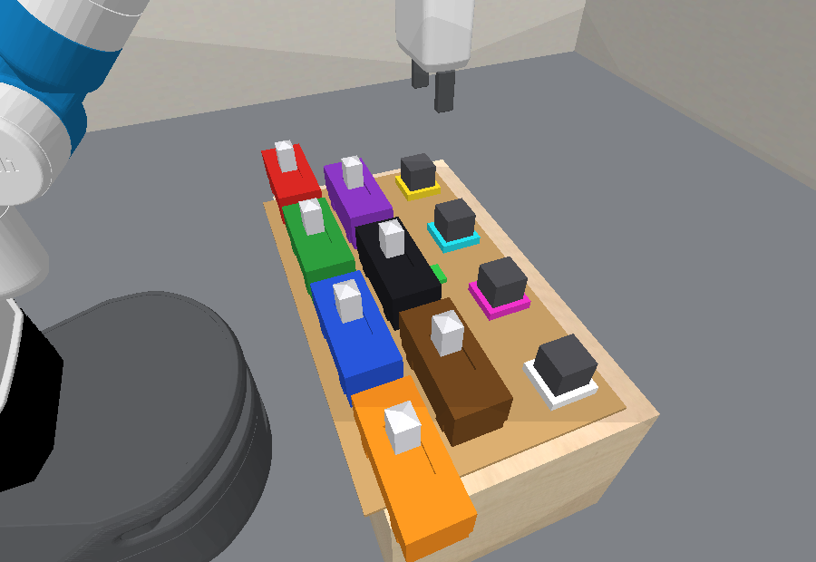

The Busyboard Domain
Buttons, lamps, and wiring the robot never sees
pybullet_busyboard - branch bridge-learning - updated 2026-09-06
Assets: docs/envs/busyboard/ - continual-protocol runs: logs/agent_continual*/busyboard-*
Slides 2-12: the domain, its objects and features, the train/test split. 13-15: the two settings and the oracle. 16-22: the continual-protocol runs, what broke, what we learned. 23: glossary of every name used here.
Why another domain?
- Every other domain in the suite hides numbers: fan wind, boil heat, glue cure time, domino friction. The shape of the hidden process is known and a few knobs are fitted.
- Busyboard hides structure: which buttons feed which lamp, in which order, and which button forbids it. No setting of a continuous parameter vector expresses that.
- The board has memory: a lamp is armed by the order in which its buttons are pressed, so the same button setting lights a lamp or not depending on how it was reached. A table of settings cannot describe it.
- Evidence arrives late: a lamp only lights after its buttons have been held for a while, so the button pressed most recently is often not the one that caused the light.
- Some buttons must stay off, a breaker punishes greed, and every goal asks for some lamp to stay dark. "Press everything" is therefore not a strategy.
The world

- A Panda arm faces a children's busy board resting on the table.
- Buttons (front): toggle switches. Pushed from one side they latch on, from the other off. The pale slider's position is the button's state.
- Lamps (back): grey blocks that glow in their own colour as they light. Each bulb stands on a base in that colour, which says which lamp it is while it is dark.
- Breaker (between): a green tile that turns red when the board is overloaded.
- Every button and lamp has a fixed colour, carried in the state as a
colorfeature: buttons red, green, blue, orange, purple, black, brown, grey in index order; lamps yellow, cyan, magenta, white. - Four buttons fit in a row; bigger boards use a second row.
- The only things the robot can do: press a button, release a button, or wait.
What the board hides
- Each lamp has a driver button and one or two enablers that must already be on. The lamp is armed only when the driver is pressed while every enabler is on, and disarmed when the driver goes off. Same buttons, other order: nothing.
- Some lamps have an inhibitor: a button that must stay off.
- Driving more than two lamps at once trips the breaker: every charge drops to zero and nothing charges until every button is released.
- While a lamp is armed, driven and not inhibited, a hidden charge builds; when not, it drains, faster than it built. The camera sees only brightness, which stays at exactly zero for the first 60% of the charge.
| Lamp | Condition (seed 0, default board) | Plain words |
|---|---|---|
| yellow (lamp0) | blue <- green & orange | green and orange on, then press blue |
| cyan (lamp1) | red <- green & orange | green and orange on, then press red |
| magenta (lamp2) | red <- blue & orange, not green | blue and orange on, green off, then press red |
Driver on the left of the arrow, enablers on the right, inhibitor after "not". Orange sits in every condition, so an agent that calls it "the power button" is not wrong on this board. Pressing buttons in index order (red, green, blue, orange) arms nothing here: every driver comes before one of its enablers.
How slow is slow?
| Quantity | Value | Meaning |
|---|---|---|
| One press or release | 32-67 low-level steps, median 43 | the unit of "time" the robot can spend; the switch flips 11-15 steps before the skill ends |
| Charge gained per driven step | 0.017 | busyboard_charge_rate |
| Brightness starts rising at | charge 0.60 | ~36 driven steps, invisible until then |
LampOn becomes true at | brightness 0.50 | ~47 driven steps after the arming press, about one press later |
| Charge lost per undriven step | 0.050 | full to dark in ~20 steps, under one press |
A Wait | up to 1000 steps (default) or 100 (simple setting) | ends early only if an atom of the agent's own predicates changes |
- So the gap between cause and visible effect is roughly one button operation: press A, then press B, and the lamp lights during B.
- Undoing is cheap: release a button and its lamp is dark before the next press finishes.
- Waiting is a real action, and an expensive one. An arm with no predicates has no atom that can change, so its Wait runs to the cap. Both continual arms lost 2000 of their first 10000 steps that way on 2026-09-05; the simple setting caps Wait at 100.
Two clips that show the difficulty
Interlock and order. Green and orange, the yellow lamp's enablers, then a long wait: the charge bar never moves. Press blue, its driver, last and the yellow lamp charges and lights. Pressed first, blue would have armed nothing.
Delayed credit. Green and orange, then blue: the yellow lamp is charging invisibly. The unrelated black button is pressed, and the yellow lamp lights during that press. The button that looks responsible is not.
All four clips in this deck run on the seed-0 seven-button test board (test task 1, goal cyan and white lit). The right-hand panel is experimenter-only: true wiring and latent charge. The red mark on each bar is where brightness begins.
Goals: light these, keep those dark
- Every board starts fully off: all buttons released, all lamps dark and uncharged, breaker closed.
- A goal is a lit/dark assignment over the lamps, e.g. "Use the buttons to leave the yellow lamp (lamp0), the cyan lamp (lamp1) lit and the magenta lamp (lamp2) dark."
- Goals are drawn only from assignments some press sequence realizes exactly, without tripping the breaker on the way, so every task is solvable.
- With two or more lamps, at least one lamp must stay dark. That off-target is the whole point.
- Test goals ask for at least two lamps lit (
busyboard_min_lit_test = 2) and may ask for the new white lamp (busyboard_test_extension_lit), whose condition lives among buttons training never showed.
Latch everything and wait. In index order on the default board this arms at most the white lamp, since every training driver is pressed before one of its enablers, and the next press inhibits the white lamp again; a sweep that does arm several lamps trips the breaker. Either way the task fails.
Object types and features
| Type | Features (in state order) | What they mean |
|---|---|---|
robot (1) | x, y, z, fingers, roll, tilt, wrist | end-effector pose and gripper; the arm's joints ride in the simulator state, not the features |
button (4-8) | x, y, z, rot, color, is_on | the switch's pose on the board, its colour index, and its latched state (0/1); the slider position is the state |
lamp (3-4), partially observable | x, y, z, rot, color, brightness | brightness in [0, 1] is the only readout of the lamp; LampOn is brightness ≥ 0.5 |
lamp, fully observable | + charge, armed | the hidden accumulator in [0, 1] and the latch (0/1); dropped under --partially_observable True, the setting of every agent run |
breaker (1) | x, y, z, tripped | 0 while lamps can be driven, 1 once three were driven at once; clears only when every button is off |
- color is an index into one palette shared by both types: buttons 0-7 are red, green, blue, orange, purple, black, brown, grey in index order; lamps 8-11 are yellow, cyan, magenta, white. A colour is a fixed identity on every board of every size, so "the yellow lamp needs the blue button" is a rule over features, the same as "the switch on this side drives this fan" in the fan domain.
- Objects are named
button0..button7,lamp0..lamp3,breaker,robot; the goal text names them by colour and id, e.g. "the cyan lamp (lamp1)". - What is not in the state: the wiring (which buttons drive, enable or inhibit which lamp), the charge and decay rates, the breaker limit. They live only in the env subclass the agent never reads; the base simulator the model arm rolls out is the same geometry and switch mechanics with no lamp ever lighting.
- An observation is the state plus a 900 px render of the same camera the clips use. Colour never leaks the wiring: it is identity only.
Predicates and skills
Env predicates (the oracle's vocabulary; a run can hand an agent some via agent_sim_learn_kept_predicates_names)
ButtonOn(b),ButtonOff(b):is_onLampOn(l),LampOff(l): brightness ≥ 0.5; goals are conjunctions of theseBreakerClosed(k),BreakerTripped(k):trippedHandEmpty(r)
Under the continual protocol the agents start with none of them. The observation is object features and a render; the model arm invents its own predicates in predicates.py (they also drive its Wait's early stop and the divergence checks), the model-free arm reasons over features.
Skills (shared push factory, no board-specific motion code)
PressButton(r, b)[approach, contact_z]: push the slider to the on side, 32-67 stepsReleaseButton(r, b)[approach, contact_z]: push it backWait(r)[]: hold still until an atom of the agent's predicates changes or the cap (1000 default, 100 simple)- A skill can also fail (a planning collision on a back-row button); its steps count and the episode continues.
Same shape as boil's hidden heat behind bubbling_level, but here the latent sits behind an unknown wiring with memory, and the switches the robot flips are the only things it can change.
Train / test split: the contract
| Split | Board sizes | Lit targets allowed | Lamps lit per goal | Drawn how |
|---|---|---|---|---|
| Train | 4 buttons, 3 lamps (the core board) | the 3 core lamps | at least 1 (busyboard_min_lit_train) | per task: a size uniformly from the split's list, the seed's canonical wiring at that size, a goal uniformly from the assignments some press sequence realizes exactly without tripping the breaker; train and test use separate RNGs |
| Test, default | 7 or 8 buttons, 4 lamps | all 4, the new white lamp included (busyboard_test_extension_lit) | at least 2 (busyboard_min_lit_test) | |
| Test, simple | 5 or 6 buttons, 4 lamps | all 4 | at least 2 |
- One wiring per seed (
busyboard_fixed_wiring = True): drawn once over the largest board, redrawn until every board size of the run has a non-trivial goal, then projected to each smaller board. - Core lamps keep their drives. The yellow, cyan and magenta lamps have exactly the same driver and enablers on every test board as in training, so a rule learned on the core board is true at test as long as the new buttons stay off.
- What a test board adds, per extension button: a decoy (drives nothing), the driver of the new white lamp (its enablers may be any button), or, with probability one half per core lamp, an inhibitor of a core lamp (
busyboard_extension_inhibitor_prob). Only the last one breaks a training rule, and only when that button is pressed. - In the continual runs a run has two levels: one training task on the core board, then one test task. Seed 0 draws the 7-button board (default) or the 5-button board (simple). The agent meets the extension buttons for the first time on the test level, with no resets.
- Per-episode wiring (
busyboard_fixed_wiring = False) is the harder, unused setting: train varies the wiring too and a policy must identify the board before acting.
The split in practice (seed 0)
| Board | yellow | cyan | magenta | white | Goals drawn from |
|---|---|---|---|---|---|
| Default, train 4 buttons | blue <- green & orange | red <- green & orange | red <- blue & orange, not green | - | yellow; cyan; magenta; yellow + cyan |
| Default, test 7 or 8 buttons | ... not purple | ... not black | unchanged | purple <- green & blue, not black | yellow + cyan; cyan + white |
| Simple, train 4 buttons | blue <- orange | red <- blue | green <- orange | - | each single lamp; each pair |
| Simple, test 5 buttons | ... not purple | unchanged | ... not purple | purple <- red | the four pairs other than yellow + magenta with white, and cyan + white |
- Default test goals: yellow and cyan lit needs purple and black off; cyan and white lit needs purple pressed last and black off. Brown and grey are decoys. Nothing in training says any of this; the agent finds it out on the one test episode.
- Simple test goals: yellow and magenta both need purple off; the white lamp needs purple pressed with red on. Three of the four round-1 and round-2 test losses were agents that kept purple on.
- Index-order pressing (red, green, blue, orange, ...) arms nothing on either seed-0 training board: every driver comes before one of its enablers. Seeds 1 to 9 of the simple setting have 4 to 6 of 15 ascending-order subsets that light something; seed 0 has none.
Sample tasks (seed 0, default board)


Goals name lamps by colour; the oracle answer under each card is a press sequence read off the hidden wiring, enablers before drivers, never a press that trips the breaker.
Cards: task_<split>_<idx>.png, one per distinct board size and goal, rendered by render_busyboard_media.py.
Two settings: default and simple
Default (bridge-learning, "hard") | Simple (branch busyboard-simple) | |
|---|---|---|
| Enablers per lamp | 1 or 2 (busyboard_double_enabler_prob = 0.5) | exactly 1 (0.0) |
| Inhibitors on the training board | half the lamps (busyboard_inhibitor_prob = 0.5) | none (0.0) |
| Inhibitors added at test | half the training lamps (busyboard_extension_inhibitor_prob = 0.5) | |
| Test boards | 7 or 8 buttons | 5 or 6 buttons |
| Wait cap | 1000 steps (the option cap) | 100 steps (wait_option_max_steps) |
| Latch, breaker limit 2 | both on | |
| Seed-0 train wiring | yellow: blue <- green & orange; cyan: red <- green & orange; magenta: red <- blue & orange, not green | yellow: blue <- orange; cyan: red <- blue; magenta: green <- orange |
| Seed-0 test additions | purple inhibits yellow, black inhibits cyan; white: purple <- green & blue, not black | purple inhibits yellow and magenta; white: purple <- red |
| Oracle | 10/10 test tasks | 12/12 over seeds 0-2, 132-208 steps each |
The simple setting was cut on 2026-09-05 after both agent arms failed the default board; it keeps the latch, the breaker and the test-time inhibitors, which is where the domain's difficulty lives. Seed 0 is the worst draw for an agent that presses buttons in index order: on the simple wiring no ascending-order subset lights anything (0 of 15), against 4 to 6 of 15 on seeds 1 to 9.
How much is there to find out?
| Buttons | Drives per lamp (driver, up to 2 enablers) | With an inhibitor choice | Ascending-order press subsets that light anything, seed 0 |
|---|---|---|---|
| 4 (train, default) | 28 | up to 84 | 0 of 15 |
| 4 (train, simple) | 28 | up to 84 | 0 of 15 |
| 7 (test, default) | 154 | up to 924 | - |
| 8 (test, default) | 232 | up to 1624 | - |
- Per lamp the space is small enough to enumerate exactly; the agent that won the default test level did exactly that in its sandbox (37 conjunctive patterns per lamp, refuted by every press transition that should have triggered them).
- The order is observable only through the latch: the informative experiments are presses that complete a condition, held long enough for the ramp to show. Entering a configuration by releasing a button never arms anything, so half of a naive sweep is uninformative.
- The breaker is the hazard: a probe that drives three lamps at once resets every charge and costs an all-off cycle to recover.
The oracle: how the demonstrator plans
- Pressing a button has no fixed effect, so a STRIPS operator cannot describe it. The oracle uses processes.
- Helper predicates, given to oracle approaches only:
Drives(b, l),Enables(b, l),JustPressed(b), and the derivedEnabled(l),Driven(l),Undriven(l),Overloaded(). They reconstruct the wiring from the board size, so planner and env cannot drift apart. - Exogenous processes:
ArmLamp(a driver press with the enablers on),DisarmLamp,LightLamp(armed and driven, held for the delay),ClearPressed. - Endogenous:
PressButton,ReleaseButton,Wait. - Result: 10/10 test tasks on the default board, 12/12 on the simple one, with
oracle_process_planningand--sesame_check_expected_atoms False.
Test task 1, cyan and white lit: the oracle presses green, blue and orange, then red (cyan's driver) and purple (white's driver), and waits. Black, the inhibitor of both, stays off.
How the agents are run: the continual protocol
- One run per env and seed plays its levels in order: one training task, then one test task (
--continual_levels train_then_test). A level is won when the env's evaluator certifies the goal. - The agent acts through skills (
skills_invoke,skills_execute_plan) or primitive steps; every low-level step is counted. Training levels allow resets; test levels do not (continual_allow_test_resets = False), so one test episode. - The only step budget is the pooled cap:
continual_steps_per_leveltimes the number of levels, 10000 (simple) or 15000 (default, "15k") per run. Since 2026-09-06 there is no episode horizon (continual_episode_horizon = None). - The run is one LLM conversation in rounds: the harness sends one message per level and a short one whenever the agent stops early. Sandbox work (code, data, model rollouts) is free.
- Two arms. Model-based (
agent_continual): the env and skill tools plus a model workbench,run_pythonover the recorded data withsim.fit,sim.run,sim.refineon its ownsimulator.pyandpredicates.py. Model-free (agent_continual_model_free): the same env and skill tools, the sandbox and the data file, no model. - Scored by base metrics only: steps to each win, resets, wins, LLM cost. No cap or oracle normaliser.
Results, seed 0: three rounds of the same four runs
| Round | Board | Arm | Level 1 won at step (resets) | Level 2 (test) | Run steps / cap | LLM cost |
|---|---|---|---|---|---|---|
| 1, 2026-09-05 as launched | default 15k | model-based | not won (3134 steps, then crashed on a resume) | - | 3134 / 15000 | - |
| default 15k | model-free | 14863 (7) | forfeited, 137 steps left | 14863 / 15000 | $18.3 | |
| simple | model-based | 2936 (1) | lost at the 2000-step horizon | 4936 / 10000 | $9.3 | |
| simple | model-free | not won | - | 10014 / 10000 | $12.7 | |
| 2, 2026-09-06 data fix | default 15k | model-based | 7431 (3) | lost at the horizon | 9431 / 15000 | $14.2 |
| default 15k | model-free | 7240 (3) | won in 1418 | 8658 / 15000 | $10.6 | |
| simple | model-based | 2785 (1) | lost at the horizon | 4785 / 10000 | $12.3 | |
| simple | model-free | 864 (0) | lost at the horizon | 2864 / 10000 | $6.8 | |
| 3, 2026-09-06 no horizon | default 15k | model-based | 4809 (0) | not won, gave up with 23 steps left | 14977 / 15000 | $18.2 |
| default 15k | model-free | 2694 (0) | won in 1146 | 3840 / 15000 | $4.9 | |
| simple | model-based | 2873 (0) | won in 5190 | 8063 / 10000 | $10.4 | |
| simple | model-free | 1280 (0) | won in 5977 | 7257 / 10000 | $9.8 |
Round 2 reran round 1 with the per-step data made visible inside a round; round 3 reran round 2 with the episode horizon removed. Round 3 also carries the peer commits landed between (memoized fits dropped on new data, reward-model verdicts). One seed; the simple model-free run of round 3 was preempted and resumed at step 167 with a verified replay.
What round 1 actually measured: three harness faults
- The agents acted on an empty data file. The trajectory list and the sandbox's
data/trajectories.pklwere rebuilt only at level start and after a round ended. Both arms ran thousands of steps with zero recorded episodes in view; the model arm'ssim.fitfit nothing. The model-free hard run won level 1 in 256 steps the moment its second round handed it the per-step states. Fixed: the session notifies the arm after every charged env call; the lists and the file follow the recording, the episode in progress included. - A resume crashed the model arm. Recorded states were stripped of the robot's joint data, and the base-sim predictions of a reloaded episode read it. Slurm preempted the hard model-based run; the requeue died 34 s later and 11866 steps were never used. Fixed: recordings keep joint positions, base pose and command welds; the resume test reproduces the crash on the old sanitizer.
- The episode horizon was a hidden second cap. Test levels have no resets, so the env's 2000-step episode horizon was the level's whole life; three of four round-2 test levels ended at step 2000 with 5000 or more pooled steps unused. Changed: no episode horizon in the continual protocol; the pooled cap is the only step budget.
Commits on bridge-learning: f9cf3dbb0 (data follows the recording, joint data kept), 7b8769866 (no episode horizon).
What a winning run looks like (round 3)
Default board, model-free, 3840 steps, both levels
- Level 1: read the per-step data, found the edge ("same setting, different behaviour, so hidden state"), then a Gray-code sweep of presses.
- Its final rule: conjunctions with negations, charging starts only on a press that completes the condition, releases never trigger, one gating button.
- Test level in 1146 steps and 11 turns: press every button in descending order, re-trigger each button once with the rest on, then release single buttons. Releasing purple and black, the two inhibitors of the wanted lamps, lit yellow and cyan and nothing else.
Simple board, model-based, 8063 steps, both levels
- Wrote a simulator with discrete parameters (a selector per lamp, a companion count), refit it after new data (11
sim.fitcalls over the run) and rolled plans out in it (10sim.runcalls). - Test level in 5190 steps, one episode: tripped the breaker at step 1850, learned that all-off resets it, then an explicit order test (orange on, then press blue) lit yellow, and a press of green lit magenta.
- Under the old horizon this episode would have ended, lost, at the breaker trip.
Why the model-based arm still loses the default test level
- Its workbench never held the mechanism. The run ended with
simulator.pystill the no-op residual written before its first step. Every wiring hypothesis lived in the journal and in ad-hocrun_python; the test level saw zero rollouts. The model contract asks for residual dynamics on continuous features with fittable parameters; the unknown here is a boolean circuit with a latch, inhibitors and a breaker. - Its attention went to the workbench. Round 1: 41
run_pythoncalls, 2 fits, 8 rollouts before acting; first env action at turn 22 of 65. The model-free agent acted at turn 10 of 13 and won level 1 in 25 turns and 15 minutes against 63 turns and 28 minutes. - Its own post-mortem: two 1000-step Waits before checking what a Wait costs (13% of the budget); half the test-level sweep entered configurations by releases, which never arm a lamp; a "burn-out" rule and an "edge priority" rule invented to explain breaker trips and latch effects it could not see. It concluded purple is a master enable and black a master kill; they are exactly the goal lamps' inhibitors, so with purple held on, yellow could never light.
- Where a model pays and where it does not. A rollout pays when it answers a question more cheaply than the env does. Here a probe costs ~40 steps either way and the simulator only knows what the agent typed into it. In bridge, boil and fan the hidden part is continuous, where fitting parameters from per-step data replaces real steps; here it is combinatorial.
What to change next
- A discrete hypothesis space in the model contract. Let the agent declare the space (drivers, enablers, inhibitors per lamp) and have the harness eliminate it against the recordings, which is the winning agent's enumerate-and-refute method done by the fit instead of by hand. That is the one place a model arm can beat the model-free one on this board: rollouts over the surviving hypotheses choose the press that splits them.
- Cap Wait on the default board as the simple setting does (
wait_option_max_steps = 100); an arm with no predicates otherwise pays 1000 steps for a look. - More seeds. Seed 0 is the worst index-order draw of seeds 0 to 9; the model-free agent's "gating button" heuristic is right on seed 0 because orange sits in every core drive.
- Test resets stay off for now. If they are turned on later, a one-shot win is still reportable as a win with zero resets on the level.
- Open accounting gap: a preempted round's LLM cost is recorded only at round end, so it is lost with the round.
Running it
# Oracle demo (default board, solves 10/10)
python predicators/main.py --env pybullet_busyboard \
--approach oracle_process_planning --seed 0 \
--num_train_tasks 0 --num_test_tasks 10 \
--sesame_check_expected_atoms False
# Continual runs, both arms, from a worktree (the launcher binds the job to it):
# default board scripts/configs/predicatorv3/protocol_continual_m3_busyboard15k.yaml (worktree predicators-m3)
# simple board scripts/configs/predicatorv3/protocol_continual_simple.yaml (worktree predicators-simple)
python scripts/engaging/launch.py -c predicatorv3/<config>.yaml -p mit_preemptable
# Watch: python scripts/continual_viewer.py (run pages under logs/<approach>/<experiment id>/seed0/run_*/)
- Key files:
envs/pybullet_busyboard{,_base}.py,ground_truth_models/busyboard/,run/continual.py,approaches/continual_play_mixin.py,approaches/agent_continual_approach.py,tests/envs/test_pybullet_busyboard.py. - Regenerate media:
PYTHONPATH=. python docs/envs/busyboard/render_busyboard_media.py
Glossary: every name used in these slides
| Name | Meaning |
|---|---|
| driver, enabler, inhibitor | The three roles a button can play for a lamp: the one whose press arms it, the ones that must already be on, the one that must be off. |
| latch (arming) | The board's memory: a lamp is armed by a driver press with the enablers on, disarmed when the driver goes off. Flag busyboard_latch. |
| breaker, limit 2 | Driving three lamps at once trips it; every charge resets and stays off until every button is released. Flag busyboard_breaker_limit. |
| charge, brightness, onset | The hidden accumulator, its visible readout, and the charge (0.6) at which the readout starts to move. |
| default / "hard" board | The settings as committed on bridge-learning: two-input drives half the time, training inhibitors, 7-8 button test boards, Wait uncapped. |
| simple board | Branch busyboard-simple (worktree predicators-simple): one enabler, no training inhibitors, 5-6 button test boards, Wait capped at 100. |
| m3 | The 2026-09-05 launch config family (protocol_continual_m3*.yaml) and its frozen worktree predicators-m3; "15k" is its 15000-step pooled cap for busyboard. |
| r2, r3 | Round 2 and round 3 of the same four runs, as suffixes of the experiment ids; fresh ids so --auto_resume never adopts an older run. |
| experiment id | <env key>-<approach key> from the launch config, e.g. busyboard-agent_continual_model_free_simple_r3; names the run directory and the Slurm job. |
| model-based arm, model-free arm | agent_continual (with the run_python and sim workbench) and agent_continual_model_free (without). Both are LLM agents on the same tools for acting. |
| level, round, run | A task the run must win before the next; one harness message and the agent's turn on it; one env and seed played to its end. |
| pooled step cap, episode horizon | The run's only step budget (per level times levels); the per-episode step limit the continual protocol no longer has. |
| workbench, residual model, fit, rollout | The model arm's simulator.py (rules on top of the base physics), sim.fit over the recorded data, and sim.run / sim.refine of a plan inside it. |
| data refresh | The 2026-09-06 fix: the recorded episodes, the episode in progress included, reach the agent after every env call instead of between rounds. |
| resume, replay | After a preemption the requeued job re-executes the recorded actions of the interrupted episode, checks the state against the checkpoint, and continues the same conversation. |
| scorecard, recording, viewer | scorecard.json (the run's metrics), L<k>/ (per-level actions, states, index, renders), and scripts/continual_viewer.py that shows them. |
| oracle, process planning | The reference arm with the true wiring, planning over exogenous processes (arm, light) instead of fixed-effect operators. |